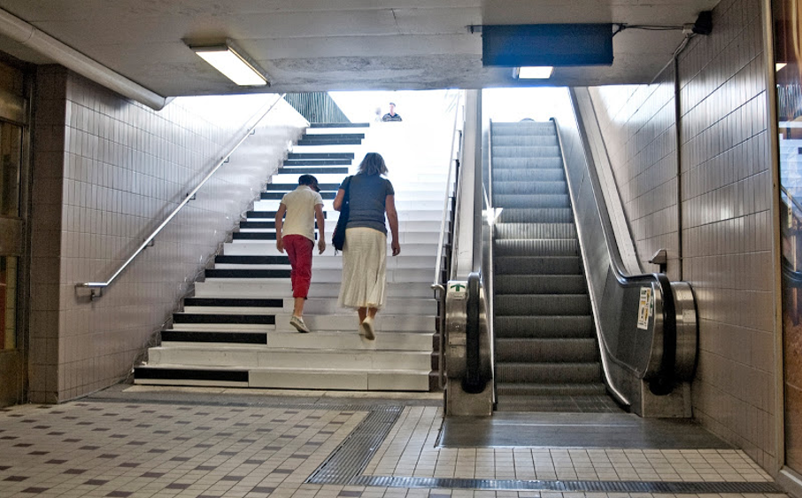
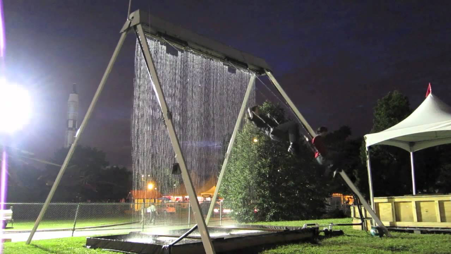
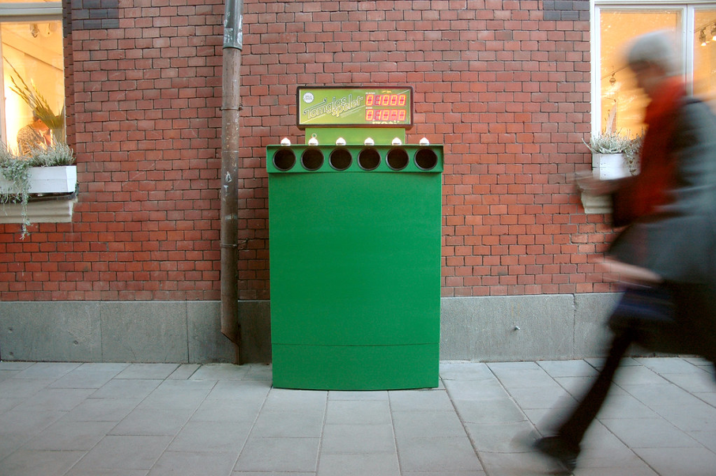

PLAYFUL INTERACTION
CHALLENGE
RESEARCH
Dit is het research gedeelte van de Playful Interaction challenge.
Piano staircase
De piano staircase is een initiatief bedacht door Fun Fact Theory met behulp van Volkswagen. Het is gebasseerd op het idee dat ‘something as simple as fun is the easiest way to change people’s behaviour for the better’. Ze bedachten hierom de piano staircase, als iemand op een traptrede zou staan dan zou deze een geluid maken die een piano toets ook zou maken.
Zelf vond ik dit erg interessant, omdat het laat zien dat mensen vastgeklemd zitten aan wat ze gewend zijn, terwijl die vrij makkelijk veranderd kan worden door een andere activiteit leuk te maken. Daarnaast vond ik het interessant, omdat het een goede manier is voor mensen om een betere conditie te krijgen.
Video die laat zien hoe het werkt:
Introductievideo SGNL

Waterfall swing
De ‘Waterfall Swing’ is een schommel waarbij de gehele tijd regen valt, behalve als de schommel eronder staat. Het interactieve kunstwerk is gemaakt door Mike O’Toole, Andrew Ratcliff, Ian Charnas en Andrew Witte en een project van Dash 7 Design.
Deze schommel vind ik erg boeiend, omdat het technologie en fun bij elkaar brengt. Dit geeft een gehele nieuwe sensatie tijdens het schommelen waardoor het twee keer zo leuk is. Het is net alsof je tijdens regen aan het schommelen bent, terwijl je droog blijft.
Video die laat zien hoe het werkt & achtergrondinformatie:
Introductievideo SGNL
Meer informatie

Bottle Bank Arcade
Dit project was ook een initiatief bedacht door Fun Fact Theory met behulp van Volkswagen. De bedoeling was dat mensen voor elke fles 100 arcade punten zouden krijgen. Degene die de meeste flessen erin stopte kreeg de highscore. Daarnaast werd elke fles ‘gevierd’ d.m.v. feestelijke geluiden. Ook was het inleverpunt erg nieuw, dus mensen bleven staan en kijken als iemand iets erin stopte. Dit bracht gezelschap en mensen waren veel opener en socialer.
Ik vind dit initiatief extreem goed, het haalt niet alleen flessen op, het stimuleert mensen ook om de flessen te bewaren en daarin te stoppen. Dit verlaagt het aantal afval op straat en mensen hebben er plezier in. Ook brengt het mensen bij elkaar wat altijd een goed iets is.
Video die laat zien hoe het werkt:
Introductievideo SGNL
